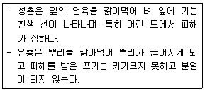

종자기사 (2013-08-18 기출문제)
1과목: 종자생산학
1. 층적저장(stratification)과 가까운 의미를 갖는 것은?
- 발아억제를 위한 건조처리
- 휴면타파를 위한 저온처리
- 발아율향상을 위한 후숙처리
- 발아촉진을 위한 생장조절제 처리
(정답률: 60%)

2. 종자코팅방법 중 필름코팅 처리와 종자단립(Seed pelleting)처리에 대한 설명으로 옳은 것은?
- 필름코팅 : 종자에 여러 가지 물질을 두껍게 덧붙임
종자단립 : 삼투압용액에 종자를 3일정도 침지함 - 필름코팅 : 삼투압 용액에 종자를 일정기간 침지함.
종자단립 : 고형물질을 종피에 침투시켜줌 - 필름코팅 : 수용성 중합체를 종피 표면에 얇게 덧씌움
종자단립 : 종자에 여러 가지 물질을 두껍게 덧씌움 - 필름코팅 : 고형물질을 종피에 침투시켜 줌
종자단립 : 삼투액용액에 종자를 일정기간 침지함
(정답률: 78%)
3. 종자 프라이밍의 주 목적으로 옳은 것은?
- 종피에 함유된 발아억제물질의 제거
- 종자전염 병원균 및 바이러스 방제
- 유묘의 양분흡수 촉진
- 종자발아에 필요한 대사과정 촉진
(정답률: 53%)
4. 종자의 표면으로부터 수분 증산속도를 결정하는 가장 중요한 요소는?
- 종자의 수분함량, 온도
- 온도, 공기의 상대습도
- 공기의 상대습도, 종자의 중량
- 종자의 중량, 종자의 수분함량
(정답률: 56%)
5. 여름재배 시금치 종자는 수입종이 많고, 국산의 경우 해외 채종을 많이 한다. 그 주된 이유는?
- 풍매화이므로 국내 채종은 채산성이 맞지 않는다.
- 봄, 여름에 걸쳐 개화하는 대표적은 장일성 식물로 우리나라 일장조건이 부적합하낟.
- 산성토양을 싫어하는데 우리나라는 산성토양이 많다.
- 자웅이주이기 때문에 우리나라 장마철 채종에 적합하지 않다.
(정답률: 65%)
6. 영양번식 작물을 종자로 번식할 경우 유전적으로 심한 헤테로성을 나타낸다. 이러한 특성을 육종에 이용하는 대표적 작물은?
- 감자
- 베고니아
- 튤립
- 뽕나무
(정답률: 60%)
7. 종자생산포의 포장검사방법에 대한 설명으로 틀린 것은?
- 포장검사는 달관검사와 표본검사 및 재관리 검사로 구분하여 실시한다.
- 표본검사는 달관검사 결과 불합격 범위에 속하는 포장에 대하여 실시한다.
- 재관리검사는 표번검사 결과 규격 미달 포장이라도 재관리하면 합격이 가능한 포장에 대하여 실시한다.
- 검사단위는 필지별로 하된 동일인이 등급이상의 동일품종을 인접 경계 필지에 재배할 때에는 동일 필지 포장으로 간주할 수 있다.
(정답률: 69%)
8. 맥류 종자의 휴면타파에 가장 효과가 큰 것은?
- 비터타놀 수화제
- 카복신, 티람 분제
- H2O2
- KClO3
(정답률: 58%)
9. 식물의 개화반응에 무한형 또는 무한생장형 식물의 특성으로 틀린 것은?
- 장기간 개화하면서 종자가 성숙된다.
- 종자의 성숙이 불균일하며 양질의 종자생산이 어렵다.
- 개화감응이 일어난 후에는 영양생장을 중단한다.
- 덩굴성 작물의 대부분이 이에 속한다.
(정답률: 59%)
10. 인공수분 시 개화전날 화분친으로 쓰일 숫꽃에도 봉지를 씌우는 이유는?
- 개화기 조절을 위해
- 화분오염을 방지하기 위해
- 활력 높은 신선한 화분을 얻기 위해
- 화분이 마르기 때문에
(정답률: 67%)
11. 종자의 저장능력과 가장 밀접하게 관계되는 성질을 검사하는 것은?
- 포장검사
- 발아검사
- 수분검사
- 병해검사
(정답률: 67%)
12. 토마토 종자전염성 병해가 아닌 것은?
- 탄저병
- 담배모자이크병
- 세균성점무늬병
- 배꼽썩음병
(정답률: 50%)
13. 종자의 저장방법 중에서 과수류나 정원수목에 많이 쓰이며 모래나 톱밥을 층층이 쌓아 저장하는 방법은?
- 밀봉저장
- 토중저장
- 냉건저장
- 층적저장
(정답률: 80%)
14. 채종재배 시 붕소의 요구도가 가장 큰 작물은?
- 벼
- 콩
- 파
- 무
(정답률: 53%)
15. 단일성식물(短日性植物)을 야간조파(夜間照破)처리하면 어떤 반응이 나타나는가?
- 화아분화가 촉진되며 개화가 빨라진다.
- 화아분화가 촉진되며 개화는 느려진다.
- 화아분화가 지연되며 개화가 늦어진다.
- 화아분화가 지연되며 개화는 빨라진다.
(정답률: 56%)
16. 종자의 생성없이 과실이 자라는 현상은?
- 단위결과
- 단위생식
- 무배생식
- 영양결과
(정답률: 66%)
17. 종자 순도검사를 위한 검사시료 60g 중 정립 56.4g, 이종종자 2.7g, 이물 0.9g일때의 정립비율(순종자율)은?
- 56.4%
- 59.1%
- 90.0%
- 94.0%
(정답률: 69%)
18. 암배우체(雌性配偶子) 형성과정에 대한 설명으로 틀린 것은?
- 정상기능을 가진 대포자는 3회에 걸쳐 핵분열을 한다.
- 암배우체는 8개의 반수체 핵을 갖는다.
- 암배우체는 2개의 극핵이 융합하여 9개의 세포로 구성된다.
- 암배우체의 한 쪽 끝에 1개의 난핵, 2개의 조세포가 배치된다.
(정답률: 63%)
19. 일장이 개화에 영향하는 것은 낮시간의 길이보다는 밤시간의 길이인데, 이때 관여하는 물질은?
- 피토크롬(phytochrome)
- 티아민(thiamine)
- 지베렐린(gibberellin)
- 옥신(auxin)
(정답률: 75%)
20. 벼(禾本)과 종자에서 초엽(coleoptile)의 기능은?
- 양분의 저장
- 배(胚)에 양분전달
- 발아시 유아(幼芽)의 보호
- 발아 후 광합성 작용
(정답률: 74%)
2과목: 식물육종학
21. 작물의 진화과정에서 새로운 유전질의 변이가 생성되는 기작이 아닌 것은?
- 교배
- 배수체
- 돌연변이
- 환경변이
(정답률: 69%)
22. 양적형질의 유전에 대한 설명으로 옳은 것은?
- 양적형질의 유전에는 폴리진이 관여하는 경우가 많다.
- 양적형질의 유전분산은 항상 환경분산보다 크다.
- 양적형질은 불연속변이를 보이므로 유전분석이 용이하다.
- 양적형질의 표현형은 주동유전자의 작용에 의해서만 결정된다.
(정답률: 72%)
23. 순계의 내용과 관계 없는 것은?
- 동일한 유전자형을 갖는 homo개체의 집단이다.
- 선발효과가 없다.
- 완전히 자가수정하는 동형접합체의 1개체에서 불어난 자손의 총칭이다.
- 영양번식작물에서 주로 나타난다.
(정답률: 67%)
24. 내병성 품종의 육성을 효과적으로 수행하기 위한 필요조치로서 적합하지 않은 것은?
- 가장 병에 약한 계통을 일정한 간격으로 섞어 심는다.
- 문제되는 병이 가장 많이 발생하는 계절에 선발해야 한다.
- 병원균을 인공접종 한다.
- 살균제를 정기적으로 살포해 준다.
(정답률: 72%)
25. 유전자지도와 물리지도에 대하여 바르게 설명한 것은?
- 유전자지도는 표현형으로 나타나는 유전자표지 및 분자표지 간에 재조합 빈도에 기초하여 만들어지며 지도 단위는 bp로 나타난다.
- 물리지도는 재조합 빈도에 의존하지 않고 염색체를 구성하는 단편을 연결하여 만들어진다.
- 유전자지도 작성에 사용되는 분자표지는 물리지도 작성에 활용되기 어렵다.
- 유전자지도의 거리와 물리지도의 거리는 항상 일치하며 유전적 거리를 알면 물리적 거리를 예측할 수 있다.
(정답률: 39%)
26. 신품종의 3대 구비조건인 D.U.S는 각각 무엇을 나타내는가?
- D : 신규성, U : 균일성, S : 광지역성
- D : 신규성, U : 안정성, S : 광지역성
- D : 구별성, U : 균일성, S : 경제성
- D : 구별성, U : 균일성, S : 안정성
(정답률: 81%)
27. 도입육종의 활용에 대한 설명으로 가장 거리가 먼 것은?
- 먼 곳에서 도입된 것은 순화시키는데 힘써야 한다.
- 유전질을 가져와 육종재료로 이용한다.
- 돌연변이의 재료로 품종을 도입한다.
- 도입품종을 그대로 실용재배에 제공한다.
(정답률: 26%)
28. 변이 중 유전하지 않는 변이는?
- 아조변이
- 교배변이
- 장소변이
- 돌연변이
(정답률: 70%)
29. 자가불화합성에 대한 설명으로 틀린 것은?
- 후손간의 변이를 크게 한다.
- F1품종 채종에 쓰인다.
- 자웅이주인 식물에 많다.
- 타가수정율을 높게 한다.
(정답률: 52%)
30. 쌍자엽식물의 형질전환에 가장 널리 이용되고 있는 유전자 운반체는?
- E. coli
- 바이러스의 외투단백질
- Ti – plasmid
- 제한효소
(정답률: 68%)
31. 동질 3배체의 특징으로 옳은 것은?
- 3가 염색체가 균등분리하여 임성이 매우 높다.
- 종자없는 과일을 생산한다.
- 동질 3배체 식물은 종자번식을 한다.
- 인위적인 동질 3배체는 2배체와 반수체를 교배하여 만든다.
(정답률: 64%)
32. 농작물 육종의 성과로 볼 수 없는 것은?
- 고추 비닐피복 재배의 확대보급
- 배추의 년 중 재배가능
- 왜성사과의 보급
- 대륜 국화의 보급
(정답률: 78%)
33. 3계 교잡종의 일반적인 설명으로 옳은 것은?
- 단교잡종에 비하여 종자생산량이 적다.
- 복교잡종에 비하여 균일성이 낮다.
- 단교잡종에 비하여 종자가격이 비싸다.
- 복교잡종에 비하여 종자생산성이 낮다.
(정답률: 38%)
34. 3성잡종의 F2에 분리되는 표현형의 종류수는? (단, 3 유전자 모두 완전 우열성이다.)
- 2
- 4
- 8
- 16
(정답률: 61%)
35. 식물의 화분모세포(花粉母細胞)는 성숙분열 후 몇 개의 딸세포가 되는가?
- 1개
- 2개
- 3개
- 4개
(정답률: 69%)
36. 호박 1개에 종자 200개가 결실하려면 화분 몇 개가 필요한가? (단, 화분은 100% 수정된다.
- 1개
- 100개
- 200개
- 400개
(정답률: 70%)
37. 게놈분석의 원리에 대한 설명으로 틀린 것은?
- 상동염색체가 없어도 2가염색체가 생긴다.
- 상동이 아닌 염색체간에는 대합(對合)이 일어나지 않는다.
- 같은 게놈 내의 염색체간에는 접합이 일어나지 않는다.
- 상동염색체는 정상의 2가염색체를 만든다.
(정답률: 50%)
38. 5개 품종을 난괴법 3반복으로 포장 설계했다면 분선분석에서 오차의 자유도는?
- 5
- 6
- 7
- 8
(정답률: 50%)
39. 신품종의 특성을 유지하기 위하여 취해야 할 조치가 아닌 것은?
- 원원종 재배
- 영양번식에 의한 보존재배
- 격리재배
- 개화기 조절
(정답률: 49%)
40. 반수체 육종에 대한 설명으로 틀린 것은?
- 반수체식물은 배우자의 염색체수를 가진다.
- 반수체를 염색체 배가하면 동형접합체를 얻을 수 있다.
- 반수체 육종을 하는 가장 큰 의의는 육종연한을 단축시키는 것이다.
- 반수체는 생장점을 배양하여 얻는 것이 가장 효율적이다.
(정답률: 50%)
3과목: 재배원론
41. 토양이 pH 5 이하로 변할 경우 가급도가 감소되는 원소로만 나열한 것은?
- P, N, Mg
- Ca, Zn, Mg
- Al, Cu, Mn
- P, Mg, Mn
(정답률: 38%)
42. 지하수의 탐색 및 제방의 누수개소의 발견을 위하여 흔히 사용하는 방사선 동위원소는?
- 14C
- 32P
- 24Na
- 60Co
(정답률: 54%)
43. 속성비료이고, 화학적 중성비료이며 생리적 산성비료의 조합은?
- 요소, 과린산석회
- 요소, 석회질소
- 황산가리, 염화가리
- 용성인비, 염화가리
(정답률: 41%)
44. 우리나라 작물재배의 특색 중 작부체계와 초지농업이 발달하지 못한 가장 큰 이유는?
- 경영규모가 영세하여 고투입 집약농업으로 발달해 왔기 때문이다.
- 농가소독증대에 도움이 되는 작물만을 집약적으로 재배해 왔기 때문이다.
- 화곡류 위주의 약탈식 집약농업을 해온 관계로 토양의 비옥도가 낮기 때문이다.
- 사계절이 뚜렷하고 기상재해가 커서 다양한 작부방식이나 초지농업의 작용이 어려웠기 때문이다.
(정답률: 38%)
45. 작물생육의 유해가스인 아황산 가스의 피해에 상대적으로 저항성이 높은 작물은?
- 오이
- 시금치
- 담배
- 고추
(정답률: 31%)
46. 광부족에 적응하지 못하는 작물로만 나열된 것은?
- 벼, 조
- 당근, 비트
- 목화, 목초
- 감자 강낭콩
(정답률: 44%)
47. 도복의 대책에 대한 설명으로 틀린 것은?
- 칼리, 인, 규소의 시용을 충분히 한다.
- 키가 작은 품종을 선택한다.
- 벼의 유효분얼종지기에 옥신을 처리한다.
- 맥류는 복토를 깊게 한다.
(정답률: 57%)
48. 오이의 화아분화에 대한 설명으로 틀린 것은?
- 본엽이 1~2매 전개될 무렵 화아분화가 일어나며 성(性)의 분화는 환경의 영향을 받는다.
- 대개 자웅동주로 성(性)의 결정은 유전적 특성이지만 환경의 영향을 크게 맏아 저온과 단일조건은 암꽃의 착새애마디를 낮추고 암꽃 수를 증가시킨다.
- 저온과 단일조건에서는 지베렐린의 생성이 증가하여 암꽃이 증가한다.
- 저온과 단일에 대한 감응은 자엽 때부터 가능하나 본엽이 1~4매 전개되었을 때 화아분화되고 성이 결정된다.
(정답률: 44%)
49. 포도 델라웨어(Delaware)품종의 무핵과 만들기에 지베렐린이 많이 이용된다. 다음중 적용 방법으로 옳은 것은?
- 만개전 14일 및 만개후 10일경에 각각 100ppm처리
- 만개전 14일 및 만개후 10일경에 각각 1000ppm처리
- 만개전 20일 및 만개후 14일경에 각각 100ppm처리
- 만개전 20일 및 만개후 14일경에 각각 1000ppm처리
(정답률: 37%)
50. 연풍(軟風)의 이점이 아닌 것은?
- 수발아(穗發芽)의 조장
- 광합성(光合成)의 조장
- 수정, 결실의 조장
- 병해의 경감
(정답률: 50%)
51. 채소류 작물의 화아분화에 대한 설명으로 틀린 것은?
- 엽근채류는 화아분화가 생식생장으로 전환점이 되며 화아분화가 되면 영양기관의 발육이 정지되기 때문에 매우 불리하고, 화아분화는 환경의 영향을 크게 받지 않는다.
- 과채류는 영양생장과 생식생장이 동시에 이루어지고, 적극적으로 화아 분화를 유도하며, 화아분화에 미치는 환경의 영향이 엽근채류에 비하여 크지 않다.
- 화아분화의 내적요인으로는 유전적인 요인, 화성호르몬 그리고 C/N율이 있으며, 외적요인으로는 일장과 온도환경이 있다.
- 일장에 의하여 화아분화가 유도되는 현상을 광주성 또는 일장효과라고 한다.
(정답률: 36%)
52. 채소류 작물의 육묘기간에 대한 설명으로 틀린 것은?
- 육묘기간은 작물의 종류, 육묘방법, 재배방식 등에 따라 달라진다.
- 육묘일수가 길어 모종이 크면 수확은 늦어지지만 정식 후에 활착이 빠른 편이다.
- 어린묘는 발근력이 강하고 흡비 흡수가 왕성하여 정식 후 환경조건이 나쁘더라도 활착이 빠르다.
- 저온에 감응하여 화아 분화가 일어나는 양배추, 배추, 샐러리와 같은 것은 묘상에서 충분한 엽수를 확보하여 정식하는 것이 중요하다.
(정답률: 52%)
53. 고구마를 재배할 때 T/R율이 증대되는 것은?
- 적기이식재배
- 질소 다비재배
- 토양의 수분부족
- 토양의 통기 양호
(정답률: 56%)
54. 채소작물의 육묘시 묘의 생육조절을 위한 방법이 아닌 것은?
- 상토내 수분과 양분의 조절을 통한 방법
- 생장조절제를 이용한 방법
- 높은 EC의 양액을 엽면살포하는 방법
- 주야간의 온도조절(DIF)을 통한 방법
(정답률: 62%)
55. 작물의 생육에 있어서 여러 가지 기관이 양적(量的)으로 증대하는 것을 무엇이라 하는가?
- 발아(germination)
- 신장(elongation)
- 생장(growth)
- 발육(development)
(정답률: 61%)
56. 토양내 석회가 과다하면 흡수가 저해되는 성분은?
- 마그네슘, 철
- 질소, 칼륨
- 황, 망간
- 인산, 구리
(정답률: 41%)
57. 십자화과 작물의 성숙과정으로 옳은 것은?
- 녹숙-백숙-갈숙-고숙
- 백숙-녹숙-갈숙-고숙
- 녹숙-백숙-고숙-갈숙
- 백숙-녹숙-고숙-갈숙
(정답률: 57%)
58. 작물의 내동성에 관여하는 생리적 요인을 바르게 기술한 것은?
- 원형질의 수분투과성이 크면 내동성이 증대된다.
- 지방함량이 많으면 내동성이 약하다.
- 당분함량이 적을수록 내동성이 강하다.
- 세포의 수분함량이 많으면 내동성이 높아진다.
(정답률: 47%)
59. 작물의 수량을 최대화하기 위한 재배이론의 3요인으로 옳은 것은?
- 비옥한 토양, 우량종자, 충분한 일사량
- 비료 및 농약의 확보, 종자의 우수성, 양호한 환경
- 자본의 확보, 생력화기술, 비옥한 토양
- 종자의 우수한 유전성, 양호한 환경, 재배기술의 종합적 확립
(정답률: 68%)
60. 벼의 생육단계중 한해(旱害)에 가장 강한시기는?
- 분얼기
- 수잉기
- 출수기
- 유숙기
(정답률: 40%)
4과목: 식물보호학
61. 오존(O3)에 의해 피해를 입은 식물체에 나타나는 증상이 아닌 것은?
- 황화
- 반점
- 얼룩
- 암종
(정답률: 72%)
62. 곤충의 피부를 크게 3부분으로 나누는데, 그 중에서 가장 바깥쪽 부분을 무엇이라 하는가?
- 외표피
- 원표피
- 진피세포
- 기저막
(정답률: 62%)
63. 잡초의 분류에 있어서 생활형에 따른 분류는?
- 일년생, 월년생, 다년생
- 여름형, 겨울형
- 수생, 습생, 건생
- 화본과, 방동사니과, 광엽류
(정답률: 54%)
64. 훈증제 농약은?
- 메틸브로마이드
- 카보퓨란
- 프로클로라즈
- 이프로벤포스
(정답률: 60%)
65. 벼 오갈병을 매개하는 가장 중요한 수단은?
- 곤충
- 인축
- 진균
- 세균
(정답률: 58%)
66. 강피, 너도동방사니, 올미가 주로 발생하는 곳은?
- 밭
- 논
- 잔디밭
- 과수원
(정답률: 75%)
67. 담자균 문에 속하는 병원균으로 담자기에 격벽이 없는 균은?
- 보리 깜부기병균
- 뽕나무 버섯균
- 밀 줄기녹병균
- 잣나무 털녹병균
(정답률: 36%)
68. 감자 바이러스병 진단에 사용되는 방법으로서 미리 싹을 틔어 병징을 발현시켜 발병 유무를 진단하는 법은?
- 병징음폐제거
- 혐촉반응
- 괴경지표법
- 지표식물
(정답률: 67%)
69. 표징에 의해 이름 지어진 병은?
- 빗자루병
- 점무늬병
- 깜부기병
- 모자이크병
(정답률: 46%)
70. 보조제(補助劑, supplemintal agent)가 아닌 것은?
- 접촉제
- 유화제
- 증량제
- 전착제
(정답률: 46%)
71. 논 잡초 중 피 방제를 위한 선택성 제초제는?
- 디캄바 액제
- 글리포세이트 액제
- 티오벤카브 입제
- 글루포시네이트암모늄 액제
(정답률: 29%)
72. 애멸구가 매개하는 벼의 병은?
- 줄무늬잎마름병, 검은줄무늬오갈병
- 오갈병, 줄무늬잎마름병
- 도열병, 오갈병
- 흰잎마름병, 도열병
(정답률: 59%)
73. 병원체가 기주작물에 병을 일으킬 수 있는 능력을 무엇이라고 하는가?
- 감수성
- 저항성
- 병원성
- 면역성
(정답률: 62%)
74. 어떤 병에 대하여 식물이 전혀 병에 걸리지 않는 특성은?
- 감수성
- 저항성
- 내병성
- 면역성
(정답률: 56%)
75. 곰팡이의 대사산물에서 분리된 항곰팡이성 항생물질은?
- 포리옥신(polyoxin)
- 글리세오훌빈(griseofulvin)
- 부라에스(Bla – S)
- 가스가마이신(kasugamin)
(정답률: 31%)
76. 유충이 잎을 가해하며, 1년에 2~3회 발생하고, 성충은 주광성이 강한 대표적인 임업해충은?
- 솔잎혹파리
- 미국흰불나방
- 박쥐나방
- 도둑나방
(정답률: 48%)
77. 농약의 과용으로 생기는 부작용으로 관계없는 것은?
- 약제저항성 해충의 출현
- 잔류독에 의한 환경오염
- 생물상의 다양화
- 자연계의 평형파괴
(정답률: 80%)
78. 잡초방제는 작물별로 잡초경합한계기간에 실시하는 것이 중요하다. 잡초경합한계기간을 바르게 설명한 것은?
- 잡초와 경쟁하기 시작하는 초관 형성기까지이다.
- 작물의 생식생장기부터 수확시까지를 말한다.
- 잡초와의 경쟁으로 작물의 피해가 비교적 적은 기간을 말한다.
- 잡초와의 경합이 심한 시기로 초관형성기부터 생식생장기의 초기단계까지이다.
(정답률: 57%)
79. 개체군에 대한 설명으로 옳은 것은?
- 개체군의 특성은 종의 특성과 일치한다.
- 개체군의 크기는 주로 개체군의 내재적 요인에 의해서 변동된다.
- 개체군의 특성으로 유전적 구성, 연령 구성, 공간 분포 양식등이 있다.
- 개체군 변동에는 밀도 의존적 요인이 작용하지 않는다.
(정답률: 54%)
80. 다음이 설명하는 해충은?

- 벼밤나방
- 벼물바구미
- 벼혹나방
- 멸강나방
(정답률: 68%)
5과목: 종자관련법규
81. 품종목록 등재의 취소 사유로 옳지 않은 것은?
- 품종의 성능이 심사기준에 미치지 못하게 될 경우
- 거짓이나 그 밖의 부정한 방법으로 품종목록 등재를 받은 경우
- 해당품종의 재배로 인하여 환경에 위해(危害)가 발생하였을 경우
- 같은 품종이 둘 이상의 품종명칭으로 중폭하여 등재된 경우(해당품종 모두 품종목록등재 취소)
(정답률: 56%)
82. 종자관련법상 품종성능의 심사기준 항목에 해당되지 않는 것은?
- 표준품종
- 재배시험기간
- 포장의 토양조건
- 평가형질
(정답률: 62%)
83. 종자관련법상 보증서 발급에 관한 설명 중 맞는 것은?
- 보증서 발급수수료는 국문일 경우 품종당 3천원이다.
- 보증서는 발급신청인에 의해 국문으로 작성할 수 있다.
- 보증서를 허위로 발급한 종자관리사에게는 50만원 이하의 과태료에 처한다.
- 종자관리사는 보증표시를 한 보증종자에 대하여 검사받은 자가 보증서 발급을 요구하면 공동부령으로 정하는 보증서를 발급하여야 한다.
(정답률: 58%)
84. 타인의 품종보호권을 침해한 자에 대한 벌칙기준으로 옳은 것은?(2019년 12월 10일 개정된 규정 적용됨
- 5년 이하의 징역이나 3천만원 이하의 벌금
- 7년 이하의 징역이나 1억원 이하의 벌금
- 10년 이하의 징역이나 1억원 이하의 벌금
- 10년 이하의 징역이나 3천만원 이하의 벌금
(정답률: 37%)
85. 다음 중 종자업의 정의로 옳은 것은?
- 신품종 육성을 업으로 하는 것
- 종자의 성능평가를 업으로 하는 것
- 유전자원의 수집 및 보존을 업으로 하는 것
- 종자를 생산, 가공 또는 다시 포장하여 판매하는 행위를 업으로 하는 것
(정답률: 78%)
86. 품종보호 원부에 등록할 사항이 아닌 것은?
- 품종보호료의 면제사유
- 품종보호권의 취소
- 통상실시권 설정의 재정
- 재심청구에 대한 확정심결
(정답률: 30%)
87. 종자관리사를 보유하지 않아도 종자업 등록을 할 수 있는 자는?
- 보리종자를 생산하고자 하는 자
- 목초종자를 생산하고자 하는 자
- 영지버섯을 생산하고자 하는 자
- 고추종자를 생산하고자 하는 자
(정답률: 53%)
88. 종자보증의 유효기간이 옳지 않는 것은?
- 채소 : 2년
- 버섯 : 1개월
- 맥류, 콩 : 1년
- 고구마 : 2개월
(정답률: 59%)
89. 다음중 품종보호 요건이 아닌 것은?
- 신규성
- 구별성
- 안정성
- 영역성
(정답률: 71%)
90. 종자관련법상 벌칙규정 중 50만원 이하의 과태료 처분에 해당하지 않는 것은?
- 임시보호권을 침해한 자
- 품종보호권 실시 보고 명령에 따르지 아니한 자
- 품종보호권, 전용실시권의 상속이나 그 밖의 일반승계의 취지를 신고하지 아니한 자
- 「특허법」에 따라 심판위원회로부터 증거조사나 증거보전에 관하여 서류나 그 밖의 물건의 제출을 받은 사람으로서 정당한 사유 없이 따르지 아니한 사람
(정답률: 43%)
91. 국가품종등록등재대상작물이 아닌 것은?
- 벼
- 보리
- 사료용 감자
- 옥수수
(정답률: 64%)
92. 종자업 등록을 하여야 종자를 생산ㆍ판매할 수 있는 자로 맞는 것은?
- 농촌진흥청장
- 국가품종목록등재권자
- 산림청장
- 시ㆍ도지사
(정답률: 60%)
93. 종자관리사의 자격기준으로 맞지 않는 것은?
- 종자기술사 자격을 취득한 사람
- 종자기사 자격을 취득한 사람으로서 자격 취득 전후의 기간을 포함하여 종자업무에 1년 이상 종사한 사람
- 종자산업기사 자격을 취득한 사람으로서 자격 취득 전후의 기간을 포함하여 종자업무에 2년이상 종사한 사람
- 임업종묘기능사 자격을 취득한 사람으로서 자격 취득 전후의 기간을 포함하여 종묘업무에 3년 이상 종사한 사람
(정답률: 71%)
94. 다음 중 공동부령으로 정하는 유통종자의 품질표시 사항이 아닌 것은?
- 버섯종균의 종균 접종일
- 재배시 특히 주의할 사항
- 종자의 무게 또는 입수(粒數)
- 농림축산식품부장관이 정하는 병해충의 유무
(정답률: 44%)
95. 품종보호료의 면제 대상이 아닌 것은?
- 국가 공무원이 직무와 상관없이 품종보호권의 설정등록을 받기 위하여 품종보호료를 납부하여야 하는 경우
- 국가나 지방자치단체가 품종보호권의 설정등록을 받기 위하여 품종보호료를 납부하여야 하는 경우
- 국가나 지방자치단체가 품종보호권의 존속기간 중에 품종보호료를 납부하여야 하는 경우
- 「국민기초생활 보장법」제5조에 따른 수급권자가 품종보호권의 설정등록을 받기 위하여 품종보호료를 납부하여야 하는 경우
(정답률: 62%)
96. 다음 중 감자의 수출ㆍ수입신고가 면제되지 않는 종자의 품종당 종자수량은?
- 5kg
- 10kg
- 25kg
- 60kg
(정답률: 44%)
97. 다음 중 품종보호권을 취소할 사유가 아닌 것은?
- 보호품종의 유지의무를 이행하지 아니한 경우
- 품종명칭의 등록을 취소한 경우
- 품종보호될 당시의 품종특성을 충족하고 있지 못한 품종
- 2년이상 국내에서 생산보급되지 않는 품종
(정답률: 55%)
98. 품종명칭등록 이의신청을 한 자(이하 “품종명칭등록 이의 신청인” 이라 한다)는 품종명칭등록 이의신청기간이 경과한 후 며칠이내에 품종명칭등록 이의 신청서에 적은 이유 또는 증거를 보정할 수 있는가?
- 10일
- 30일
- 60일
- 90일
(정답률: 62%)
99. 품종목록 등재의 유효기간은 등재한 날이 속한 해의 다음해부터 몇 년까지로 하는가?
- 5
- 10
- 15
- 20
(정답률: 69%)
100. 선서한 증인, 감정인 또는 통역인이 심판위원회에 대하여 거짓으로 진술, 감정 또는 통역을 한 때의 벌칙은?(2019년 12월 10일 개정된 규정 적용됨)
- 5년 이하의 징역 또는 1천만원 이하의 벌금
- 5년 이하의 징역 또는 5천만원 이하의 벌금
- 3년 이하의 징역 또는 5천만원 이하의 벌금
- 3년 이하의 징역 또는 1천만원 이하의 벌금
(정답률: 18%)